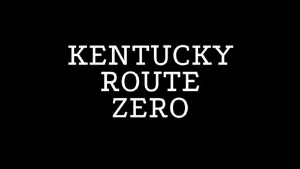

На днях вышла долгожданная Kentucky Route Zero , такой приключенческий point and click о секретном шоссе в пещерах под Кентукки Так вот, сегодня поиграл и знаете, мне понравилась. Сама игра сосредоточена на атмосфере, персонажах и повествовании. Всё красиво и мистически-необычно-реалистично ( например , спойлер(?)). Там нет сложных головоломок и всё решается легко, если внимательно читать диалоги. Рисовка мне напомнила Another World . Пока вышел только первый акт (а всего пять). Поиграйте, у меня ушло пару часов на прохождение.
[[MORE]]Внимание: в игре много текста на английском, и, кажется, пока нет русификации.